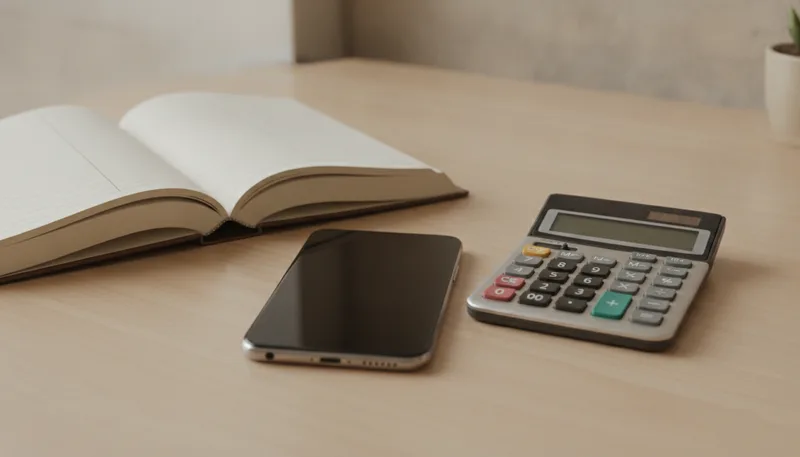
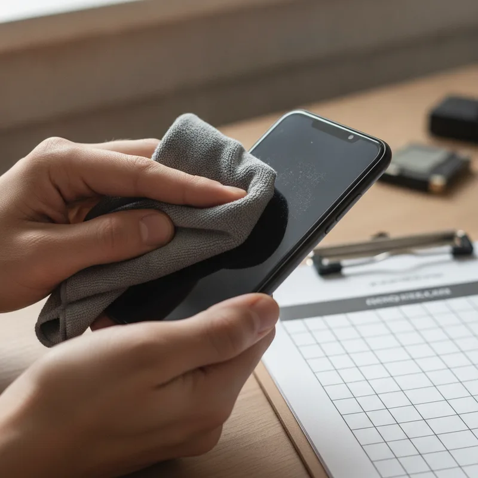

새 휴대폰으로 기기를 바꿀 때 기존에 쓰던 스마트폰을 어떻게 처리할지 고민이 시작됩니다. 통신사 대리점에서는 사용하던 기기를 반납하면 남은 할부금을 면제해 준다고 안내하지만, 실제 통장으로 들어오는 금액을 계산해 보면 중고 시장 판매가와 차이가 납니다. 약정 기간 동안 납부한 유료 부가서비스 요금과 기기 외관 감가상각까지 고려하면 실제 수령액은 딴판입니다. 잔여 할부금을 차감받는 반납 프로그램과 시세대로 현금을 받는 직접 매매 사이에서 어느 쪽이 유리할지 정확한 계산이 필요합니다.

가장 큰 차이는 보상 방식과 부대 비용에 있습니다. 통신사의 중고폰 보상 프로그램은 24개월이나 48개월 약정을 걸고 지정된 기한에 폰을 반납하면 출고가의 최대 40~50%를 면제해 주는 구조입니다. 하지만 이 혜택을 받으려면 매월 5천 원에서 1만 원 안팎의 부가서비스 이용료를 추가로 납부해야 합니다. 반면 중고 시장이나 개인 간 거래를 이용하면 별도의 부가서비스 비용 없이 현재 시세에 맞춰 현금을 바로 지급받습니다. 단말기 상태가 깨끗한 편이라면 통신사 반납보다 중고 시장에 직접 파는 편이 훨씬 유리합니다.
표면적인 보상 금액만 보고 판단하면 안 됩니다. 통신사 프로그램에서 '출고가 50% 보장'이라는 안내를 받더라도, 2년 동안 낸 부가서비스 요금 총액을 차감해야 진짜 혜택이 나옵니다. 예를 들어 월 7,000원씩 24개월간 낸 부가서비스 비용 168,000원은 온전히 지출로 들어갑니다. 여기에 반납 시점에 미세한 외관 흠집이나 잔상으로 감가가 적용되면 보상액은 더 깎입니다. 반면 중고폰 거래 사이트에서 판매할 때는 수수료나 택배비를 뺀 최종 입금액이 그대로 자산으로 들어옵니다. 방송통신위원회와 한국통신사업자연합회가 운영하는 스마트초이스에서 공개하는 스마트폰 평균 매입 시세를 조회해 보면 해당 기기의 대략적인 가치를 쉽게 가늠할 수 있습니다. 차액은 여기서 갈립니다.
반납 프로그램은 단말기 상태 검수가 매우 까다롭습니다. 전원 작동이나 액정 파손 여부뿐만 아니라 카메라 렌즈 상태, 테두리 미세 찍힘, 화면 잔상 등 여러 항목을 기준으로 등급을 나눕니다. 가입 당시에는 50% 보장이라는 설명을 듣지만, 2년 실사용 후 B등급이나 C등급 판정을 받으면 면제 금액이 대폭 줄어듭니다. 부족한 잔여 할부금은 결국 사용자가 사비로 충당해야 합니다. 게다가 반납 후에는 동일 통신사에서 지정된 최신 플래그십 기기로만 기기변경을 해야 하는 제약도 뒤따릅니다. 다른 통신사로 이동하려는 경우에는 그동안 낸 부가서비스 요금만 날리는 셈이 됩니다.

제품 상태가 완벽하지 않더라도 상태에 맞는 거래 채널을 정하는 것이 핵심입니다. 중고폰 거래 시 체크방법으로 먼저 수행할 일은 화면 잔상과 카메라 멍 현상 확인입니다. 하얀 바탕화면을 켜두고 잔상이 심하다면 개인 직거래에서는 감가 요구를 크게 받게 됩니다. 이럴 때는 잔상 차감 기준이 명확하게 정해진 무인 매입 단말기나 중고폰 매입 전문 브랜드를 이용하는 편이 나을 수 있습니다. 외관에 깊은 패임이 있더라도 기능에 이상이 없다면 개별 매입 업체의 행사 보상금을 활용하는 쪽이 통신사 반납보다 유리한 경우가 많습니다.
개인 간 중고폰 거래 플랫폼을 통한 직거래는 유통 단계를 거치지 않으므로 시세 그대로 높은 가격을 받을 수 있는 장점이 있습니다. 다만 구매자와의 일정을 잡아야 하고 거래 후 발생할 수 있는 환불 요구나 하자 분쟁을 처리해야 합니다. 반면 대형마트 등에 설치된 무인 매입 단말기나 리사이클 플랫폼은 현장에서 즉시 기기를 진단하고 빠른 시간 안에 계좌로 입금해 줍니다. 직거래보다 수만 원 정도 시세가 낮게 책정될 수 있지만, 거래 과정의 번거로움과 사기 리스크를 피하고 싶다면 자연스러운 선택이 됩니다.
가장 흔히 발생하는 실수는 구글 계정이나 애플 아이디를 로그아웃하지 않고 기기 초기화만 진행하는 것입니다. 계정이 연동된 상태로 초기화되면 락이 걸려 타인이 사용할 수 없게 되며, 매입 센터에 회수되더라도 정상 보상 처리가 일주일 이상 지연되는 시행착오를 겪게 됩니다. 따라서 중고폰 거래 확인사항의 첫 단계는 반드시 계정 삭제입니다. 삼성 계정, 구글 계정, iCloud 계정을 완벽히 로그아웃한 뒤 전체 초기화를 진행해야 합니다. 초기화 완료 후 첫 화면에서 초기 설정 창이 뜨는지 확인해야 안전합니다. 불공정 계약이나 시세 문제로 피해를 입었다면 한국소비자원 등 공식 피해구제 창구를 통해 상담을 받아볼 수 있습니다.
이미 통신사 보상 프로그램에 가입되어 2년 차가 되었다면 이 항목을 먼저 살펴보세요. 우선 사용 중인 휴대폰의 액정과 외관에 수리가 필요한 수준의 파손이 있는지 확인해야 합니다. 파손이 심해 수리비가 중고 시세보다 많이 나온다면, 수리비를 감수하고 반납하기보다는 현재 상태 그대로 중고 매입 업체에 파는 것이 지출을 줄이는 길입니다. 2년마다 무조건 동일 통신사에서 최고 사양 스마트폰으로 바꿀 계획이 확실하다면 반납 프로그램이 편리할 수 있습니다. 그러나 알뜰폰 요금제로 갈아타거나 자급제 단말기를 선호하고 폰을 깨끗하게 관리하는 편이라면 직접 중고 시장에 파는 것이 생활비 절약에 이롭습니다.
스마트폰 교체 주기마다 수십 만 원의 가치가 달린 만큼 단순한 통신사 설명에만 의존해서는 안 됩니다. 매월 지출되는 부가서비스 금액과 반납 조건의 감가 기준을 꼼꼼히 따져보고, 현재 중고 시세와 비교하는 습관이 필요합니다. 기기 상태에 맞는 판매 방식을 제때 선택하는 작은 관심이 매년 새어 나가는 통신비와 생활비를 지키는 지름길입니다.
| 슬롯 | 위치 | 기준 블록 | 근거 |
|---|---|---|---|
🖼 이미지 1 used-phone-trade-in-guide-2026-01-intro.webp | 문단 1 뒤 | P · 새 휴대폰으로 기기를 바꿀 때 기존에 쓰던 스마트폰을 어떻게 처리할지 고 | 도입부 첫 문단 뒤(히어로) |
| 📢 광고 1 | 문단 4 앞 | H3 · Q. 중고폰 거래 플랫폼 이용 시 실제 수령액은 어떻게 계산하나요? | H2 앞 · 직전 광고와 — 간격 |
🖼 이미지 2 used-phone-trade-in-guide-2026-02-middle.webp | 문단 8 앞 | H3 · Q. 기기 외관에 잔상이나 흠집이 많을 때 중고폰 거래 시 체크방법은 어 | 글자수 기준 중간에 가장 가까운 소제목 앞 |
| 📢 광고 2 | 문단 10 앞 | H3 · Q. 개인 간 거래와 무인 매입 단말기의 장단점은 무엇인가요? | H2 앞 · 직전 광고와 845자 간격 |
🖼 이미지 3 used-phone-trade-in-guide-2026-03-end.webp | 문단 16 앞 | P · 스마트폰 교체 주기마다 수십 만 원의 가치가 달린 만큼 단순한 통신사 설 | 마지막 문단 앞(마무리) |